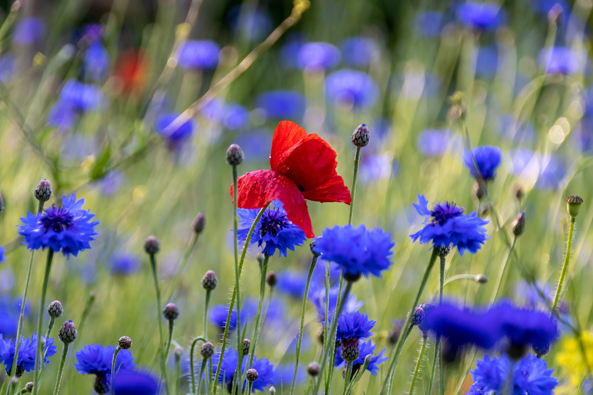

Cornflower
Cornflower, tambien conocida como centaurea cyanus o centaurea cyanus es una planta herbácea
de la familia de las asteráceas. Es originaria de Europa y Asia, aunque se ha naturalizado en otras regiones del
mundo. Es una planta de jardín muy popular, que se cultiva como planta ornamental. La flor de cornflower es
azul, aunque también se puede encontrar en colores como el blanco, el rosa, el amarillo y el rojo. La flor de
cornflower es muy popular en la industria de la moda, ya que se utiliza para hacer ropa y accesorios. La flor de
cornflower es muy popular en la industria de la moda, ya que se utiliza para hacer ropa y accesorios.
